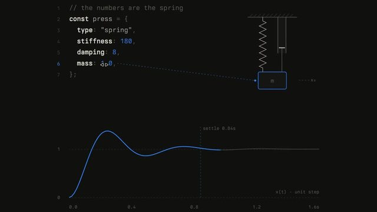
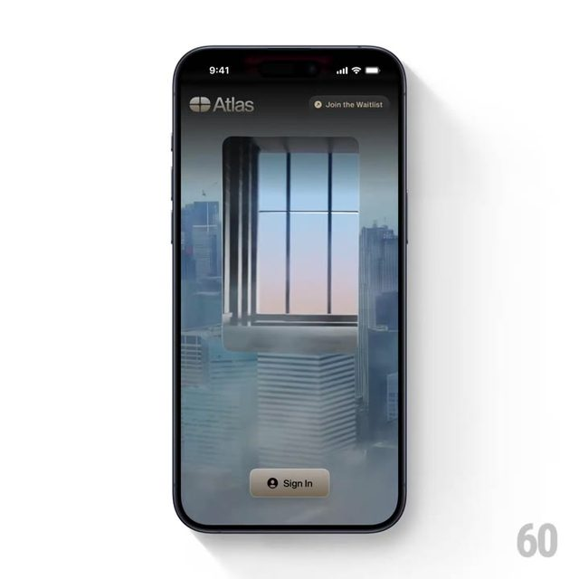
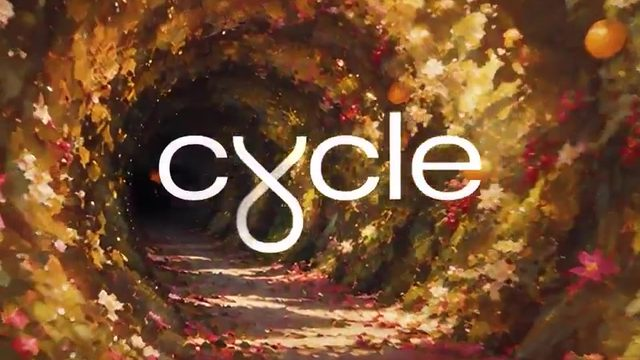

点封面在页面里播放（Vimeo / YouTube / X 需要代理；Vimeo 若没自动开始，再点一下播放键）。觉得好就点「喜欢」，有想法就写在下面的框里保存，我每天出日报前会读，存进偏好和审美库；会多找同类，但每天仍保持类型分散。
目录 01 New MacBook Pro with PROLED XDR Display02 弹簧和缓动曲线的交互演示（动画课新内容）03 Atlas card 开卡引导转场04 Flora takes flight（Down the Rabbit Hole 音乐节视觉）05 What I've been working on all year（新片预告）06 We Finally Know More About Humanity's First Civilization07 5 sneaky ways stores get you to spend more08 The new MacBook Pro with M609 cycle（四季隧道循环）10 Your Skeleton Is Electric－ 看完剔除（6 条）拆 细拆：Apple MacBook Pro 产品片
01 实拍剪辑 剪辑节奏
New MacBook Pro with PROLED XDR Display
Apple · YouTube 10-28 【看过视频】（完整看过）
YouTube 117 秒全片已下载并完整看过
好在哪 117 秒的产品片：暗棚里掀开屏幕开场，中间用甩镜头一路跑过亮堂的办公室、巨大中庭、公园、森林和悬崖边的桌子，最后甩回暗棚合上屏幕。功能字浮在场景里，只有接口那段跟着鼓点硬切可借 周二轮到英雄镜头和 B-roll 正好拿它学：产品特写怎么打光、生活镜头怎么接回产品。细拆见文末
展开全文
02 UI动效 代码动画
弹簧和缓动曲线的交互演示（动画课新内容）
Emil Kowalski · X 11-02 【看过画面（抽帧）】

X ↗ 20 秒全片已下载，抽帧看过
好在哪 深灰底、等宽字的「代码 + 图」双栏：左边一段 spring 参数（stiffness 180、damping 8、mass 1），右边一个弹簧挂着的方块，下方蓝线画出弹跳曲线，标着「settle 0.84s」。后半段换成 cubic-bezier 缓动，旁边一个手机抽屉跟着曲线弹出可借 讲「参数怎么影响结果」时直接照搬这套版式：代码一行、实物一个、曲线一条，三者同时动。用 Remotion 做很顺手，曲线就是 SVG path
展开全文
03 UI动效 3D质感 转场
Atlas card 开卡引导转场
60fps（收录 Atlas card 的 App） · X 11-02 【看过画面（抽帧）】

X ↗ 25 秒全片已下载，抽帧看过；和你点过喜欢的 60fps 是同一个号
好在哪 手机里的开卡引导页：一张黑色金属卡从雾气笼罩的城市高楼之间飞下来，穿过窗格、落进一间暖色的室内，再翻转着穿回窗外，最后一只手拿着卡，卡面印着「Atlas」。底部按钮全程不动可借 按钮和界面固定、只让背景场景一路换，是很省力的「一镜到底」思路。讲 AI 产品时可以让主角物件（一张卡、一颗芯片）穿过几个场景
展开全文
04 MG 3D质感 字体版式
Flora takes flight（Down the Rabbit Hole 音乐节视觉）
Merijn Hos（Agent Pekka） · Vimeo / Stash 11-03 【看过画面（抽帧）】
45 秒全片已下载，抽帧看过；字体未识别
好在哪 45 秒的音乐节宣传：3D 的花、叶子、蝴蝶和缠绕的彩带在雾里慢慢飘，每到一位艺人，衬线字名字（Florence The Machine、The xx、David Byrne）就淡淡浮在花丛中间。结尾全部收进一张粉红背景的阵容海报可借 名字不做特效，只是安静地叠在会动的 3D 背景上，是很克制的做法。结尾把前面出现过的信息一次性排成海报，适合做系列片尾
展开全文
05 片头片尾 实拍剪辑 剪辑节奏
What I've been working on all year（新片预告）
Johnny Harris · YouTube 10-08 【看过画面（抽帧）】
YouTube
107 秒全片已下载，抽帧看过
好在哪 107 秒的新片预告：开头黑屋里一台老电视在放新闻讲话，然后是作者在堆满地图的暖光工作室、黄昏的船头、村子小路、沙滩上的木船、中餐馆饭桌、水下潜水的镜头。整体调色偏暖、偏暗，最后黑底小字「COMING NOVEMBER 2026」可借 影像质感参考：所有镜头都留很多暗部，光只打在人脸和关键物件上。预告结尾不放大标题，只给一行小字日期，反而更有分量
展开全文
06 知识讲解 MG
We Finally Know More About Humanity's First Civilization
Kurzgesagt · YouTube 10-08 【看过画面（抽帧）】
全片 17 分 30 秒，只下载、看了前 2 分钟
好在哪 考古题材：拿火把的探险者、圆形「窗口」里出现古代人物，再切到「Modern Archaeology」的剖面小场景。中间一段「Timeline」时间轴：先只有「Year 0」到「2025」，再往左加出文字和帝国（-3000、-2300），最后拉到「-10,000」的最早定居点可借 讲「时间有多久」可以学这个时间轴：先给一个熟悉的长度，再把轴往左拉长，让观众自己看到原来那段有多短
展开全文
07 知识讲解 MG 字体版式
5 sneaky ways stores get you to spend more
TED-Ed · YouTube 10-22 【看过画面（抽帧）】
全片 6 分 22 秒，只下载、看了前 2 分钟；字体未识别
好在哪 讲商店套路的 2D 动画：一只熊推着购物车，独角兽耳机打折标签「$150」。关键词都做成有立体描边的大字，比如「BEHAVIORAL ECONOMICS」「BOUNDED RATIONALITY」，还有一行大字平躺在地上往远处延伸可借 专业术语第一次出现时，单独给一屏、做成有质感的大字，观众会记住这个词。字可以平放在地面上，用透视做出纵深
展开全文
08 字体版式 剪辑节奏
The new MacBook Pro with M6
Apple · YouTube 10-27 【看过画面（抽帧）】
58 秒全片已下载，抽帧看过；字体未识别
好在哪 58 秒的短版广告，和上面那条完全是两种剪法：大部分时间是纯黑底，电脑侧面一条细光、三颗芯片方块、一句白字「More personal. More powerful.」「Up to 22 hours」，中间才夹几秒作品画面。接口用细线标「Thunderbolt」「SD」「HDMI」可借 和第 1 条对照着看：同一款产品，长版靠生活镜头，短版靠黑底加一句话。短视频开场可以学短版，每句话一屏、底色不换
展开全文
09 3D质感 转场
cycle（四季隧道循环）
Spline · X 11-02 【看过画面（抽帧）】

X ↗ 12 秒全片已下载，抽帧看过
好在哪 镜头一直往一条树叶隧道深处走，中间白色细字「cycle」不动。隧道从粉色春花变成绿叶果子、红黄秋叶、雪林，最后又回到春花，首尾接上可以无限循环可借 「镜头往前推 + 环境慢慢变」很适合讲「一年里发生了什么」「几代模型的变化」，字固定在中间就不会乱。原帖没写怎么做的，这里不猜
展开全文
10 知识讲解 MG
Your Skeleton Is Electric
Kurzgesagt · YouTube 09-24（超过 30 天） 【看过画面（抽帧）】
72 秒全片已下载，抽帧看过
好在哪 72 秒竖屏讲骨头会「发电」：举杠铃的人物、一根白骨头，然后一路放大到骨头内部，蓝色的骨细胞像网一样连着，标「Osteocytes」。最后回到举重的人，换成一位白发老人举着挂气球的杠铃可借 竖屏讲微观的标准走法：从人到器官再到细胞，一直往里推，中间不换背景色系。结尾用同一个动作换个人，比讲道理更好记
展开全文
看完剔除（6 条） 60fps（CRED） · 之前已经看过这条，不重复推
Codrops · 6 秒几乎是一张静态照片，只是嘴在动
Vox · 播客对谈切片，只有两个人说话，没有画面手法
XBOX · 4 月的游戏预告，画面饱和偏游戏感，不是今天要的克制
今日细拆 · 第 1 条
117 秒，暗棚英雄镜头和外景 B-roll 怎么来回接 【看过视频】（完整看过；时间点是大约值，误差一两秒） Apple 10 月 28 日发的 MacBook Pro 产品片。周二的细拆轮到「英雄镜头和 B-roll」：英雄镜头就是产品主角的特写，B-roll 是人在各种地方用它的生活镜头。这条片子开头和结尾在暗棚里拍电脑，中间全是外景，靠甩镜头一路连起来
结构：暗棚开场，外景跑一大圈，再回暗棚 0:00–0:18 暗棚。一只手掀开屏幕，镜头慢慢绕着机身转到屏幕后面；0:07 屏幕亮起一只 3D 蝴蝶，镜头慢推。音乐也是慢慢铺底 0:18 音乐重拍一落，开始第一段甩镜头：暗棚空桌、亮堂办公室、窗边的人、走路的人，最后落到一个摆满桌子的巨大中庭，镜头从高处降下来推进 0:40–0:47 触屏特写：手指点、划、捏，切得很碎，卡在音乐的小节拍上 0:47 手指在屏幕上转一个 3D 物体，硬切到俯拍旋转楼梯，镜头以同样方向、同样速度转，两个镜头靠「转」接上 0:49–1:16 第二段甩镜头：暗办公室、亮办公室、公园，然后跟拍一个人夹着电脑走路；1:10 前后节奏放慢，黄昏露台慢慢绕拍，给眼睛歇一下 1:16–1:30 把普通办公桌放进怪地方：干掉的喷泉、森林、石头山坡 1:30–1:34 接口特写，四下硬切，每下打一个字：MagSafe、Headphone jack、HDMI、SDXC card slot 1:35 高潮：航拍一张悬崖边的桌子，镜头往后上方猛拉，露出一整排桌子沿山脊排下去 1:41–1:50 甩镜头甩回开头的暗棚，有人合上屏幕，镜头俯看机身上发光的苹果标志；音乐在合盖那一下戛然而止，切到黑底标志 英雄镜头和 B-roll 的打光差别 英雄镜头（开头和结尾）：棚里几乎全黑，主要的光就是屏幕本身，照亮人脸和手；景深很浅，只让屏幕边缘或机身清楚 B-roll（中间）：全是自然、均匀的亮光，阴天、黄昏、亮堂的办公室；镜头几乎不停，一直在绕、升降、跟拍，电脑始终在画面中间 一暗一亮的反差本身就在讲卖点：暗处显屏幕亮，亮处显「去哪都能用」 转场 主力是甩镜头：镜头往一个方向快速甩到糊，切到下一个镜头时还在同方向、同速度甩。所以光线完全不同的两个地方也能连得很顺 转动匹配：屏幕里的物体转，下一个镜头的楼梯也朝同方向转 硬切只留给要强调的地方：触屏那段和接口那段 功能字 大部分功能字是放进场景里的：比如 0:16「Up to 2000 nits peak brightness」浮在电脑左边，1:00「Up to 128GB unified memory」浮在键盘上方，镜头走它就被留在原地 只有接口那段是平贴在画面中间、跟鼓点一下一下跳出来 白色无衬线字，字体未识别（看着像苹果自家字体） Mika 可以怎么用（这部分是做法建议，不是原片用的工具） Remotion 里做甩镜头转场：前一段最后 6 帧整体 translateX 加速到几百像素并加横向模糊（filter: blur() 或 SVG feGaussianBlur 只模糊 x 方向），后一段前 6 帧从反方向同速度减速进来 Three.js 场景里把字放进场景：用 troika-three-text 或平面贴图把字放在物体旁边的 3D 坐标上，相机移动时字自然被甩在后面，比贴在屏幕上的字幕更有空间感 开头和结尾用同一个场景、同一个动作的正反（开盖、合盖），片子就首尾闭合；结尾声音在动作那一帧切掉 放到 AI 科普里怎么用 讲一个 AI 产品时，可以把「产品本身」做成暗底发光的特写，把「用在哪」做成亮色场景，两者用甩镜头连。列功能时只在最后一段用硬切加鼓点，前面都让字放在场景里
看原片 ↗
信源：Vimeo、Stash、YouTube、X。全程只读浏览，没有点赞、关注、评论或转发。
 YouTube
YouTube